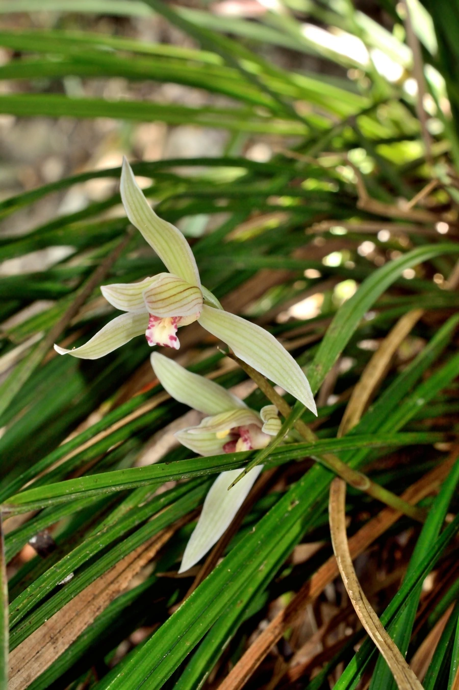

花卉与草本 · 植物界
莲瓣兰 Cymbidium tortisepalum

兰科兰属地生兰，花瓣狭长微扭、形似莲花瓣，冬春开花，是云南特产的传统名兰，花色丰富、香气幽雅。
- 分类
- 门被子植物门纲单子叶植物纲目天门冬目科兰科属兰属
- 栖息环境
- 海拔 1500–2500 米的山地林下与溪谷，喜凉爽湿润半阴
- 地理分布
- 中国云南西北部、四川西南部、贵州西部，以云南为主要分布中心
- 保护级别
- 列入国家重点保护野生植物名录（兰属）；野生资源因采挖减少
物种志
莲瓣兰为兰科兰属地生草本，假鳞茎卵球形，叶五至七枚，狭带形，长三十至六十厘米，边缘具细齿。花葶直立，高二十至四十厘米，着花二至五朵，花被片狭长、略扭转，形似莲花花瓣，颜色有白、粉、红、绿及复色，唇瓣宽阔并具紫红色斑块，花期一至三月，香气幽雅；蒴果长圆形，果期翌年秋季。
莲瓣兰主要分布于中国云南西北部、四川西南部和贵州西部，多生于海拔一千五百至两千五百米的山地林下和溪谷旁。它喜凉爽湿润和半阴环境，要求疏松透气、富含腐殖质的土壤，忌高温和积水。花形似莲、花色丰富，是云南的传统名兰，栽培历史悠久，名品众多；野生资源因过度采挖而日渐稀少，被列入国家重点保护野生植物名录。
形态与习性
- 株高叶长 30–60 cm，花葶直立
- 花期1–3 月，花被片似莲瓣
- 果期翌年秋季，蒴果长圆形
- 光照喜半阴散射光
- 水分喜湿润，忌积水
- 土壤富含腐殖质的疏松土
- 主要用途传统名兰盆栽与观赏
趣味知识
- 莲瓣兰的花瓣狭长微扭，形似莲花花瓣，因此得名。
- 云南是莲瓣兰的分布中心和栽培中心，名品如大雪素、小雪素久负盛名。
- 莲瓣兰在冬春之际开花，花期恰逢春节，是云南年宵花市的重要角色。